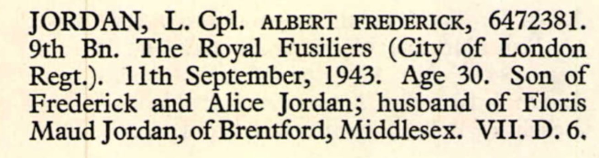

Albert Frederick Jordan 1914 - 1943
[ Home ] | [ Calendar ] | [ Surnames Index ] | [ Census Index ] | [ Family History ]A grocery london co op society's shop assistant and the child of Frederick Jordan (a grocer's carman) and Alice Deal, Albert Jordan, the third cousin once-removed on the mother's side of Nigel Horne, was born in Brentford, London, England on May 17, 19141,2 and baptized in Camberwell, London, England on Aug 2, 1914. He married Floris Stephenson in Brentford around Nov 19407.
During his life, he was living at 10 Loring Road, Isleworth, London, England on Jun 19, 19219 and on Sep 29, 19391. During 1943, he was serving in the army in Algeria (regiment: Royal Fusiliers (City Of London Regiment); Rank: Lance Corporal; Service number: 6472381).
He died on Sep 11, 1943 in Algeria3,4,5,6 and was buried at Bone War Cemetery, Annaba, Algeria after Sep 11, 19438.
Parents
- Frederick John Thomas was born on Apr 30, 1880
- Alice Rebecca was born on Nov 7, 1880
Citations
- 1939 Register - Findmypast (was the son of the head of the household)
- England & Wales births 1837-2006 - Findmypast
- Army Roll Of Honour 1939-1945 - Findmypast
- Commonwealth War Graves Commission Debt Of Honour - Findmypast
- World War 2 Allies Collection - Findmypast
- World War 2 Allies Collection - Findmypast
- England & Wales Marriages 1837-2005 - Findmypast
- https://www.cwgc.org/find-records/find-war-dead/casualty-details/938503/ALBERT%20FREDERICK%20JORDAN/
- 1921 Census Of England & Wales - Findmypast (was age 7 and the son of the head of the household)
Media
Albert Jordan - War Graves Entry

Albert Jordan - War Graves Entry
Albert Frederick Jordan - Headstone documentation

England & Wales births 1837-2006 - BMD/B/1914/2/AZ/000870/002
England & Wales marriages 1837-2005 - BMD/M/1940/4/AZ/000867/025
Commonwealth War Graves Commission Debt Of Honour - GBM/CWGC/ROLLOFHONOUR/001380621
Army Roll Of Honour 1939-1945 - GBM-WWIIARH-0117817
World War 2 Allies Collection - WW2/06905664
World War 2 Allies Collection - WW2/00117734
1921 Census Of England & Wales - GBC/1921/RG15/06201/0037/03
Family Tree

Generated by ged2site. Last updated on Jun 11, 2024